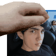

¿Who Is Mati?

La
Mati es una niña: agradecida, aguda, amable, amorosa, artistica, asombrosa, atenta, azul, azulada, bácan, bacana, bien-hablada,
bilingue, bomba, brillante,
calida, cañon, carismatica, cautivadora, celestial, chachi, chanchi, chévere, chistosa, chupi, comiquisima, considerada, cool, divertida, determinada,
dotada,
elegante, emocionalmente inteligente, encantadora, esplendida, estupenda, excelente, extraordinaria, fantastica, fenomenal, formidable, generosa, genia,
genial, gentil, gloriosa, graciosa, guapa, guay, hilarante, honesta, humilde, imaginativa, increible, ingeniosa, inspiradora, justiciera,
leal,
linda, macanuda, magistral, magnetica, magnifica, maravillosa, misandrica, noble, ocurrente, optimista, padre, padrísima, perfecta, perspicaz poderosa, poliglota, preciosa,
preocupada, radiante, respetuosa,
sensasional, sensible, simpatica, sobresaliente, talentosa, valiente, vibrante, virtuosa, zen, etc, etc..